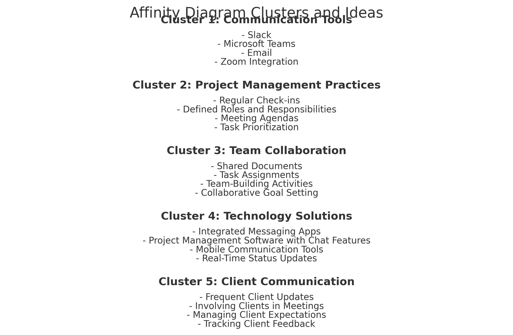

Problem Statement: Lack of Real-Time Communication in Project Management
In our current project management workflow, there is a lack of real-time communication among team members, which leads to delays in decision-making and missed deadlines. The absence of an integrated messaging tool within the project management platform has significantly reduced team efficiency and project transparency. Our goal is to implement a real-time messaging feature that will enable faster communication and reduce project delays by 25%.
Problem Statement Image
Affinity Diagram
The Affinity Diagram organizes key ideas and potential solutions into logical clusters to analyze the lack of real-time communication in project management effectively. Below are the five clusters with relevant ideas:
Cluster 1: Communication Tools
- Slack
- Microsoft Teams
- Email
- Zoom Integration
Cluster 2: Project Management Practices
- Regular Check-ins
- Defined Roles and Responsibilities
- Meeting Agendas
- Task Prioritization
Cluster 3: Team Collaboration
- Shared Documents
- Task Assignments
- Team-Building Activities
- Collaborative Goal Setting
Cluster 4: Technology Solutions
- Integrated Messaging Apps
- Project Management Software with Chat Features
- Mobile Communication Tools
- Real-Time Status Updates
Cluster 5: Client Communication
- Frequent Client Updates
- Involving Clients in Meetings
- Managing Client Expectations
- Tracking Client Feedback
Affinity Diagram Image

Selected Sketch: Sketch 3

Microsoft Teams Emblem

Description of the Paper Prototype
The paper prototype provides a visual representation of a proposed solution designed to address the lack of real-time communication
in project management. The prototype outlines a centralized project management platform that integrates the following key features:
- Real-Time Messaging: A built-in messaging system for instant communication among team members, reducing delays in decision-making.
- Task Management: A user-friendly interface for assigning, tracking, and updating tasks in real time.
- Collaborative Tools: Features like shared documents, whiteboards, and goal-setting modules to improve teamwork and collaboration.
- Status Updates: Real-time updates on project progress and alerts for approaching deadlines to ensure everyone stays on track.
- Accessibility: Mobile-friendly and desktop-accessible, ensuring communication and updates are seamless across devices.
By incorporating these features, the prototype aims to streamline communication, foster collaboration, and enhance the overall efficiency
of project management processes. This design approach addresses the key pain points identified in the problem statement.